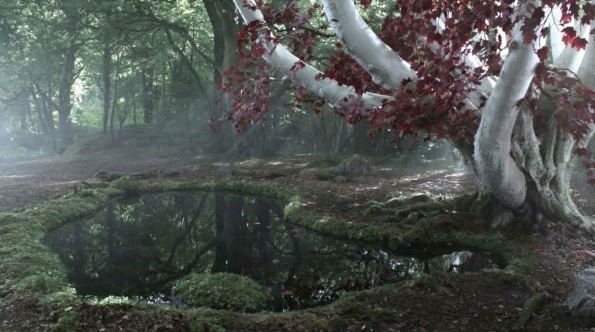
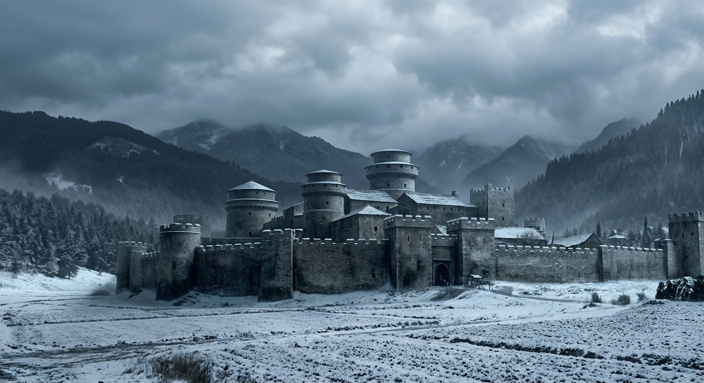
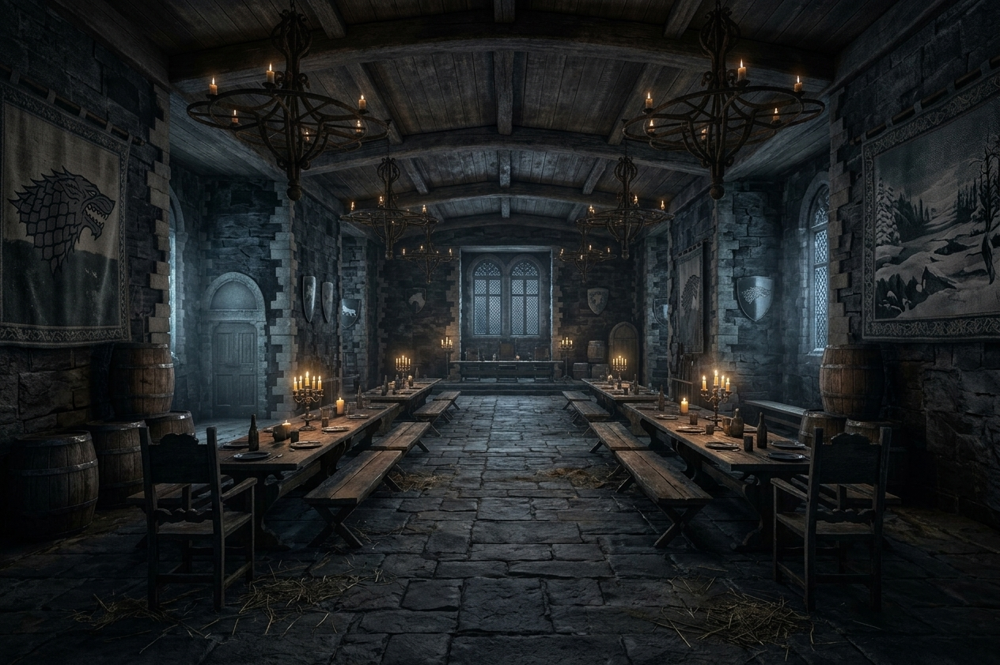
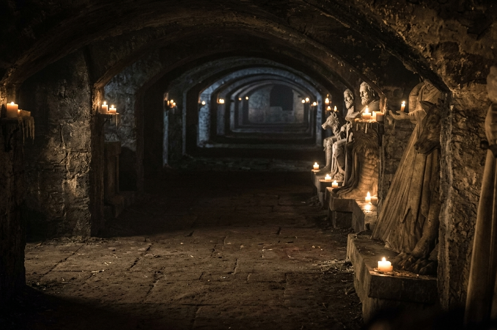

El Bosque de los Dioses (Godswood)
Un santuario de paz custodiado por el antiguo Árbol Corazón de rostro tallado.
Capital ancestral del Norte y hogar de la Casa Stark
Winterfell es el corazón de la historia, cultural y político del Norte de Westeros. Conocida por sus infraqueables murallas de piedra, sus aguas termales subterráneas y su lema "Se acerca el invierno" "Winter is coming", esta fortaleza representa la resistencia, el honor y la tradición de los hombres del Norte.

Descubre los rincones más icónicos de nuestra majestuosa ciudad:

Un santuario de paz custodiado por el antiguo Árbol Corazón de rostro tallado.

Centro de los grandes festines, juicios y asambleas de los señores del Norte.

Tumbas ancentrales bajo la fortaleza donde se encuentran los antiguos Reyes del Invierno.